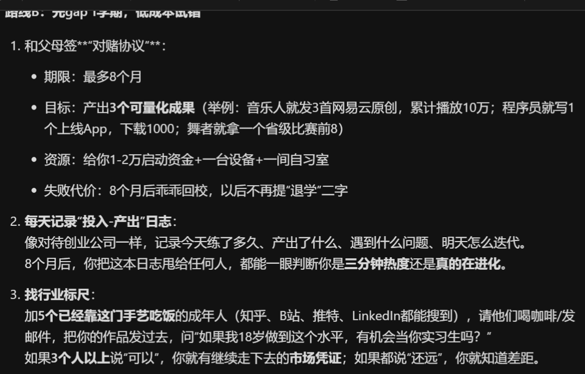
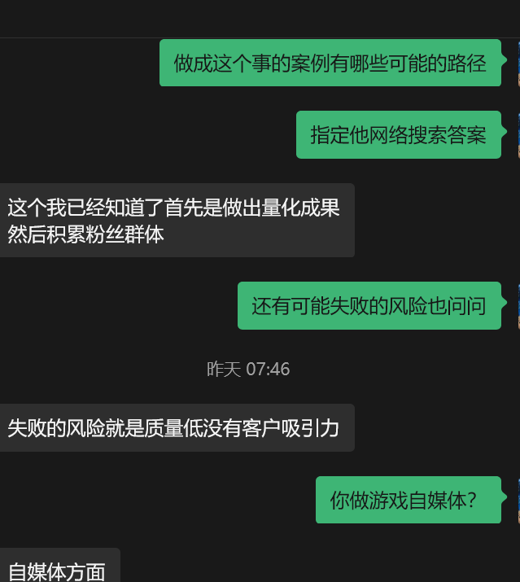
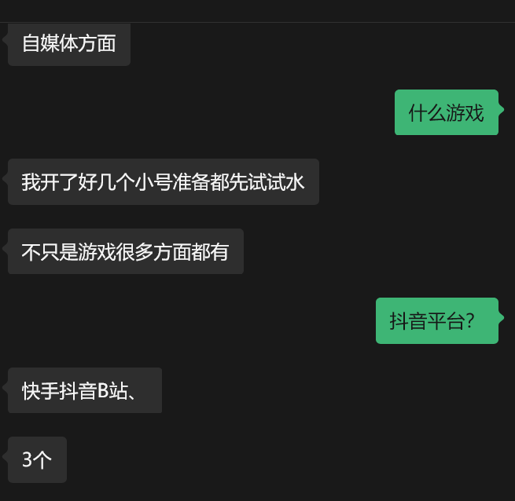
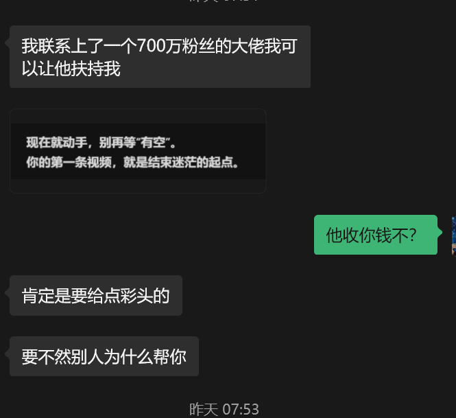

拱北靠北
@psyofsouthwest
@MindfulReturn 游戏迷告诉你没见过那么多粉丝的游戏自媒体，国内单品类游戏固定受众有没有七百万都不一定




MindfulReturn 身心修复局
@MindfulReturn
气炸了，想了很久，还是决定发出来和各位大佬讨论下：
我儿子今年高一，为了让他学好英语不在国内卷，送他去读国际高中，结果他去了一个月说他不想读了，想创业做游戏自媒体。
他还问了kimi意见，结果kimi居然让他和父母对赌，给他8个月时间试试，不行再回去读书。 https://t.co/68h0G4Km4k